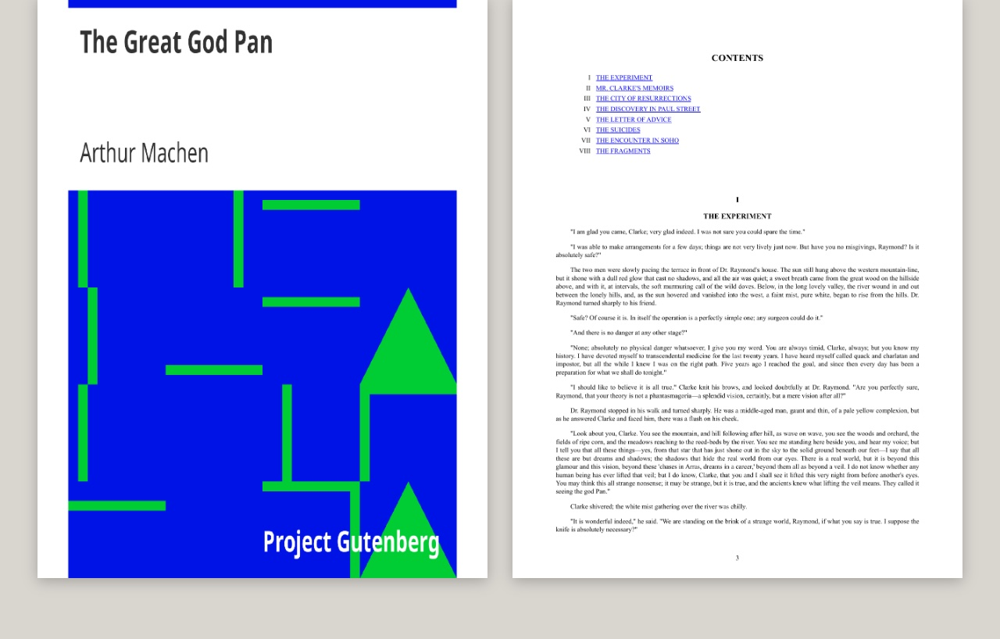

epub-to-pdf
A shell script that converts an EPUB to a PDF using Calibre's ebook-convert with fixed settings, so every book comes out the same way. It takes either an .epub file or an unpacked EPUB folder, which is how Apple Books keeps its books.

Using it
epub-to-pdf book.epub writes book.pdf in the current folder, or to a path given as the second argument, and prints where the PDF went. make pdf EPUB=~/book.epub does the same and puts the result in Downloads by default.
The fixed settings
- Letter paper and a 12-point default font, both changeable through environment variables.
- Margins of 54 points on every side.
- Page numbers, and the cover kept at its own proportions.
Unpacked books
An Apple Books folder is zipped back into a proper EPUB first, following the format's rule that the mimetype file goes first and uncompressed. A folder that is not an EPUB, or one protected by DRM, is refused with a message rather than converted. If the conversion fails, the last lines of Calibre's log are shown.
Calibre's ebook-convert
bash
an .epub file, or an unpacked EPUB folder as Apple Books stores them